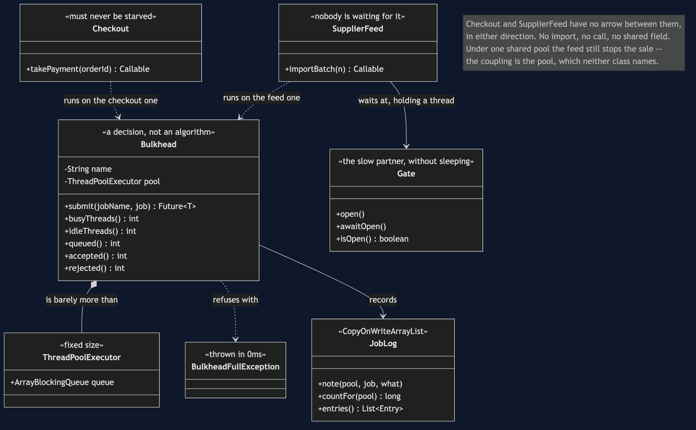

Bulkhead — Class Diagram

What the arrows are saying
The most important thing on this diagram is a missing arrow, which is why there is a note pointing at the gap. Checkout and SupplierFeed do not reference each other. There is no import, no call, no shared field, no message between them. In the shared pool version, a slow supplier feed still stops the shop selling. The coupling is entirely through a resource neither class mentions, which is why no amount of reading either file will reveal it.
Bulkhead is drawn as a composition over ThreadPoolExecutor because that is honestly all it is. A fixed pool, a bounded queue, a name, and some counters. There is no strategy here, nothing adaptive, nothing that reacts. Putting the stereotype "a decision, not an algorithm" on it is the point of the diagram: the pattern is in having two instances, and the interesting work — deciding where the wall goes — leaves no trace in the type system at all.
Checkout and SupplierFeed are stereotyped by what they mean to the business, not by what they do. "Must never be starved" and "nobody is waiting for it" are not technical properties. Nothing in the code can derive them. They come from the people who run the shop, and if they are not written down — as a pool, as a thread count — then during an outage they are decided by whichever job asked for a thread first.
BulkheadFullException carries a stereotype about time rather than about meaning. Thrown in 0ms is the whole value of it: the caller still has time to shed the request or degrade. Contrast that with an unbounded queue, which would accept the job, tell the caller nothing, and fail much later and much worse.
Gate exists so the tests do not sleep. It is a CountDownLatch dressed as a slow partner API: a job waiting at a closed gate holds its thread in exactly the way a job waiting on a slow network does, and it holds it for precisely as long as the test wants. A Thread.sleep(200) is only long enough until the machine running it is busy, which is how thread tests become flaky.
JobLog is a CopyOnWriteArrayList, and the diagram says so on purpose. This is the only project in the category with real threads, so it is the only one where the recording apparatus itself has to be thread-safe. A plain ArrayList written to by four workers at once would quietly lose entries or corrupt itself, and the evidence for the whole argument would be the thing that broke.
Nothing here has a SimulatedClock, and that absence is deliberate. Everywhere else in this category time is something the test controls. Here it cannot be, because the subject is threads genuinely waiting for one another.